Verdugo Series
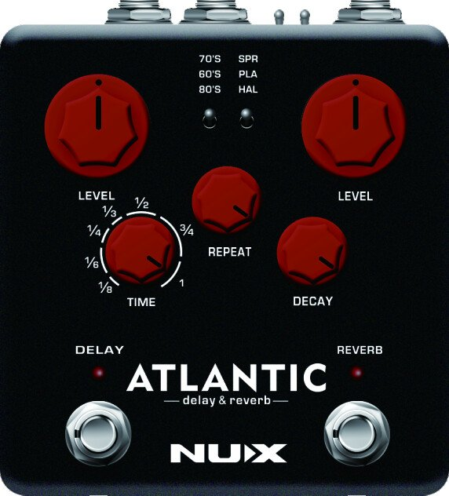
NDR-5
Owner’s Manual
Copyright
Copyright 2017 Cherub Technology Co., Ltd. All rights reserved. NUX and Atlantic Delay & Reverb are trademarks of Cherub Technology Co., Ltd. Other product names modeled in this product are trademarks of their respective companies that do not endorse and are not associated or affiliated with Cherub Technology Co., Ltd.
Accuracy
Whilst every effort has been made to ensure the accuracy and content of this manual, Cherub Technology Co., Ltd. makes no representations or warranties regarding the contents.
Warning! Important Safety Instructions Before connecting, read instructions
WARNING: To reduce the risk of fire or electric shock, do not expose this appliance to rain or moisture.
CAUTION: To reduce the risk of fire or electric shock, do not remove screws. No user-serviceable parts inside. Refer servicing to qualified service personnel.
CAUTION: This equipment has been tested and found to comply with the limits for a Class B digital device pursuant to Part 15 of FCC Rules. Operation is subject to the following two conditions: (1) This device may not cause harmful interference, and (2) this device must accept any interference received, including interference that may cause undesired operation.
The lightning symbol within a triangle means “electrical caution!” It indicates the presence of information about operating voltage and potential risks of electrical shock.
The exclamation point within a triangle means “caution!” Please read the information next to all caution signs.
- Use only the supplied power supply or power cord. If you are not sure of the type of power available, consult your dealer.
- Do not place near heat sources, such as radiators, heat registers, or appliances which produce heat.
- Guard against objects or liquids entering the enclosure.
- Do not attempt to service this product yourself, as opening or removing covers may expose you to dangerous voltage points or other risks. Refer all servicing to qualified service personnel.
- Servicing is required when the apparatus has been damaged in any way, such as when the power supply cord or plug is damaged, liquid has been spilled or objects have fallen into the apparatus, the apparatus has been exposed to rain or moisture, does not operate normally or has been dropped.
- The power supply cord should be unplugged when the unit is to be unused for long periods of time.
- Protect the power cord from being walked on or pinched particularly at plugs, convenience receptacles and at the point where they exit from the apparatus.
- Prolonged listening at high volume levels may cause irreparable hearing loss and/or damage. Always be sure to practice “safe listening”.
Follow all instructions and heed all warnings Keep these instructions!
Overview
One of the best Delay and Reverb algorithms in a stomp box. NUX Atlantic Delay & Reverb pedal has specially selected 3 Delay & 3 Reverb effects with an additional dreamy Shimmer effect. And now with NUX’s latest Core Image technology, the Verdugo series offers one of the best sound enhancements. We are choosing the best ideas to make it real for musicians.
NUX Atlantic Delay & Reverb pedal also has inside routing control between the effects, so you can choose which effect comes first. In serial mode you can create a deep reflection reverb with wet or dry repeats, or you can split your guitar signal and add both effects in a parallel chain. Each effect will be mixed with separate dry signals.
It has a 6.35 mm mono jack input and 2 outputs, so you can also connect in stereo for the real Delay & Reverb experience.
It has an Input Level toggle switch, so you can optimize the input signal for your signal level.
Features
- 3 Delay Effects – 70’s Analog, 60’s Tape and 80’s Digital
- NUX SMART TAP with Tap Subdivision Options
- 3 Reverb Effects – Spring, Plate and Hall
- Plate Reverb with Shimmer Effect
- TRS Input – Insert Connection
- Input Level Switch (−10dB / +4dB)
- Parallel or Serial Routing
- Stereo Output
- USB Port for firmware updates
Control Panel
Delay toggle switch
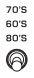
70’s (40ms – 400ms)
Retro-delay meets modern technology, without losing the realistic BBD-effected repeats, so essential for capturing the 70’s retro feel.
60’s (55ms – 550ms)
A warm & dusty tape-echo machine effect, packed with an array of analogue-only goodies. Saturated colors that turn any sound into vintage. Tweak the Repeat knob to the max and use the Time knob to get an experience, just like the real Tape-Echo Machine.
80’s (80ms – 800ms)
A digital era invention, crystal clear repeats. Digitally-copied clean repeats carry your signal with absolutely zero color particles. This is the best option if you don’t want to mix your favorite chorus with another colorization effect—or your favorite modulation effect.
LEVEL (DELAY) knob
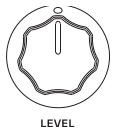
Controls the wet/dry balance. Adjusts the volume for your repeats.
REPEAT knob
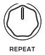
Varies the number of repeats. When set to the MAX, sustained runaway will start. You can create an infinite sustained runaway on 60’s Delay mode.
TIME knob
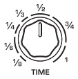
Controls the delay time. Turning the Time knob while repeating can produce interesting pitch effects.
Time knob also changes the TAP subdivision on TAP TEMPO mode. (See TAP TEMPO)
DELAY LED indicator
It also shows the TAP TEMPO.
Delay footswitch
Engages and disengages the Delay effect. And activates TAP TEMPO.
TAP TEMPO
Instantly sync up your delays with the tempo you want to accompany. Simply tap the tempo with your foot. TAP TEMPO Speed range is 125 ms – 1500 ms for all delay types.
Delay Pattern
Before you set the TAP TEMPO, use the Time Knob and choose any desired time signature to change the delay pattern. When TAP TEMPO is engaged, your repeats will create a delay pattern according to selected time signature.
TAP Values
1/8, 1/6, 1/4, 1/3, 1/2, 3/4 and 1.
Reverb toggle switch
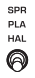
Spring Reverb
Creates a polyphonic atmosphere filter that catches the sound reflections from deep down spring reverb tank. You can adjust the tank size with the level knob and set the reflection distance with the decay knob.
Plate Reverb & Shimmer
Straight and clean reflections inside a flat-walled room. You can control the room-size with the Level knob and then tweak the Delay bounce point with the Decay knob.
If you hold down the Reverb switch, straight reflections will be heated and swirled throughout the inside of the room creating a Shimmer effect.
Hall Reverb
The sound of a well-designed hall. Whether the hall size is big or small, the reflections will be emitted by wall furniture. You can adjust the interior hall-size, from a small garage to a huge structure with the Level knob and increase or decrease the number of objects on the walls with the Decay knob. Less decay means more objects and faster reflection fading.
LEVEL (REVERB) knob
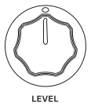
Controls the balance of wet signal and dry signal. Adjusts the Reverb level and size of the area.
DECAY knob
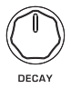
Controls the decay time of the wet signal. The range depends on the selected reverb type.
Reverb LED indicator
Reverb footswitch
Engages and disengages the Reverb effect. And controls the Shimmer effect.
Shimmer: Choose Plate Reverb. Then hold the Reverb foot-switch (as long as you want) until your effect takes flight. The effect will fade out when you release the foot-switch.
I/O Jacks
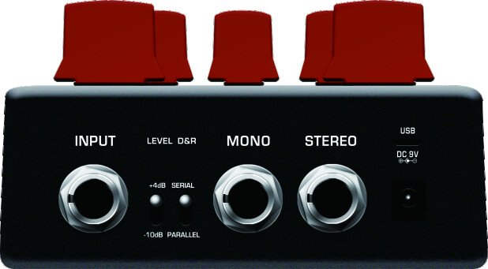
Input
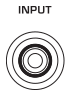
6.35 mm Insert jack.
Input Level toggle switch
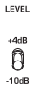
Adjusts the input headroom. If the input signal is too strong, switch to +4 dB to increase the headroom.
Routing toggle switch
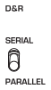
You can use the Delay and Reverb effect with parallel or serial connection. In serial mode, you can change the signal routing. Before plugging in the power cable, hold the footswitch of the effect you want to come first, then plug in the power cable.
Stereo Outputs
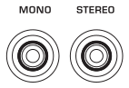
Use the right output for mono connection.
DC jack
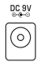
9V DC
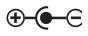
.Connection Methods
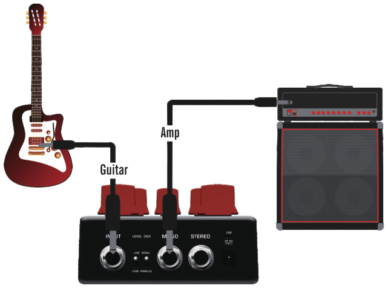
Atlantic’s input jack can support stereo cable as insert (send/return) method. Please see the two drawings below:
Using “Y” cable connection
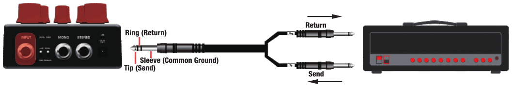
Using “Insert” cable connection
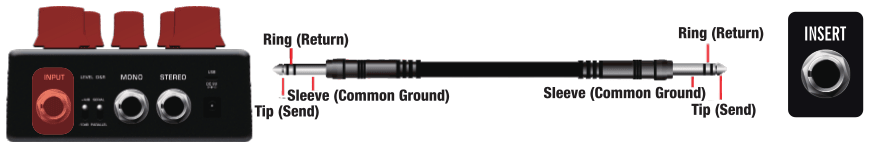
Inside Routing
DELAY first
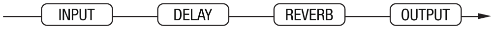
-
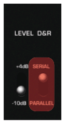
Set SERIAL
-
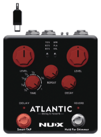
Hold down the Delay footswitch
-
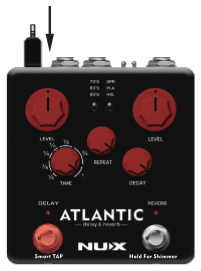
Plug in the power cable
REVERB first
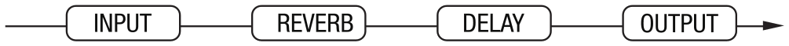
-
Set SERIAL
-
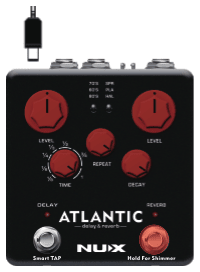
Hold down the Reverb footswitch
-
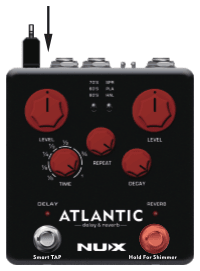
Plug in the power cable
Parallel Routing
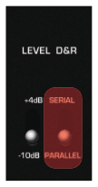
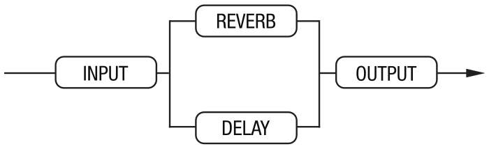
Specifications
- Sampling rate: 44.1kHz
- A/D Converter: 32bit
- Signal Processing: 32bit
- Frequency Response: 20Hz~20kHz
- THD+N: -100dBu (A-Weighting)
- Dynamic Range: 102dB
- Input Impedance: 1MΩ
- Output Impedance: 1kΩ
- Power: 9V DC (Negative tip, Optional ACD-006A adapter)
- Dimensions: 105mm(L) x 115mm(W) x 57mm(H)
- Weight: 420g
Accessories: User manual, NUX sticker.
*Specifications and features are subject to change without notice.
Made in China
Firmware Upgrade
From the separate Atlantic Firmware Update Guide.
- Download the firmware update kit from the website using a PC or Mac. (https://www.nuxefx.com/atlantic.html)
- Connect your NDR-5 to your Mac or PC using a quality micro USB sync/data cable.
-
- Run “NUX Device Firmware Updater (DFU)”.
- Hold down the “DELAY” and “Reverb” footswitches together and plug in your power supply (9V/DC, Negative Center). Release both foot-switches when you see “Device connected.”
-
- Select the new firmware file (bin file) that was downloaded along with the NUX Device Firmware Updater (DFU).
- Click the “Start Update” button.
- Wait until the update is completed. During the upgrade process, both LED indicators will keep flashing, and once the progress is done, both LED indicators stay on.
-
Finish updating.
- Close “NUX Device Firmware Updater (DFU)”.
- Unplug the power supply and micro-USB cable from the pedal.
- Try out the new features and tones.
You can also refer to this tutorial made by our friend Ryan Lutton: https://youtu.be/pxpXoFZ_yUw